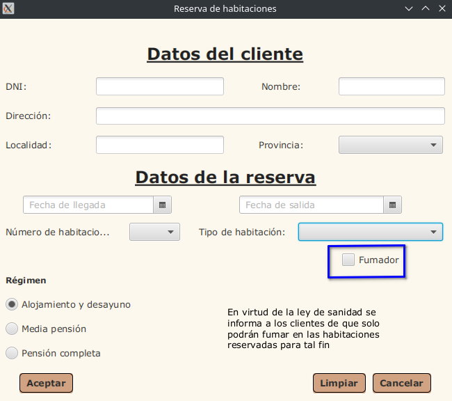

Campo Fumador

Funcionamiento del Campo Fumador:
El campo Fumador indica si el cliente tiene pensado fumar en la habitación del hotel.
Tooltip del Campo Fumador:
Cuando se coloca el puntero del ratón sobre el Campo Fumador, aparece un mensaje que pone “¿Eres fumador/a?.